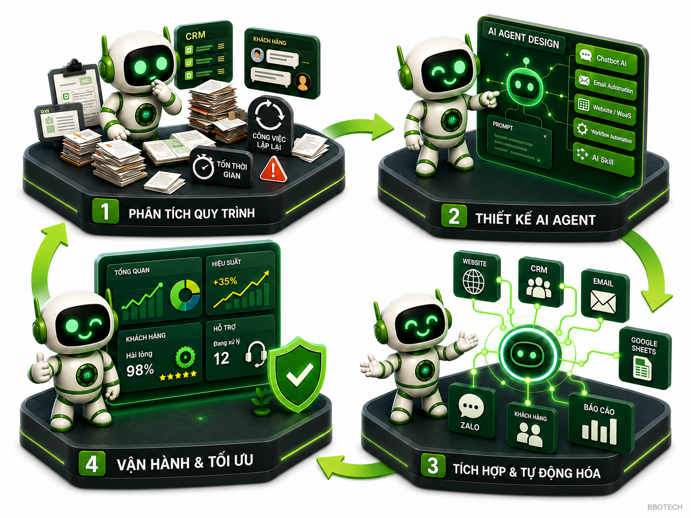
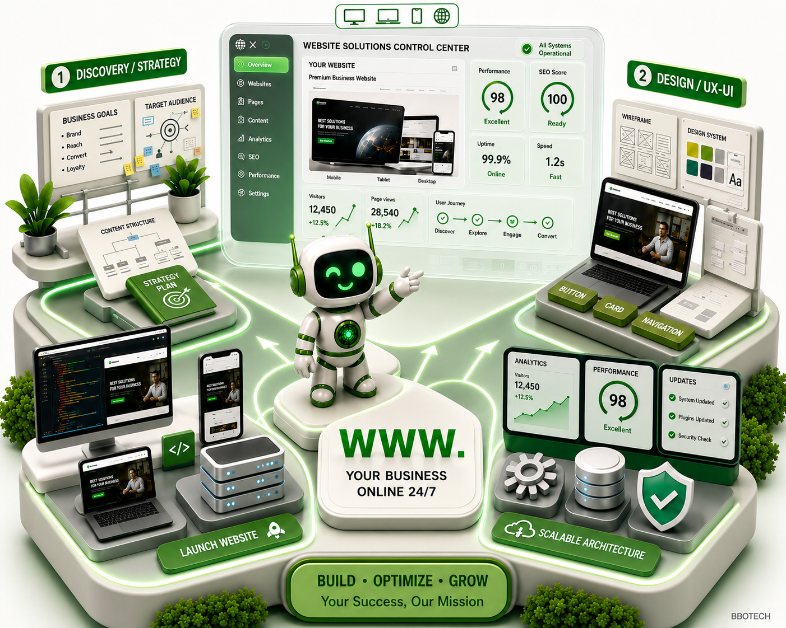
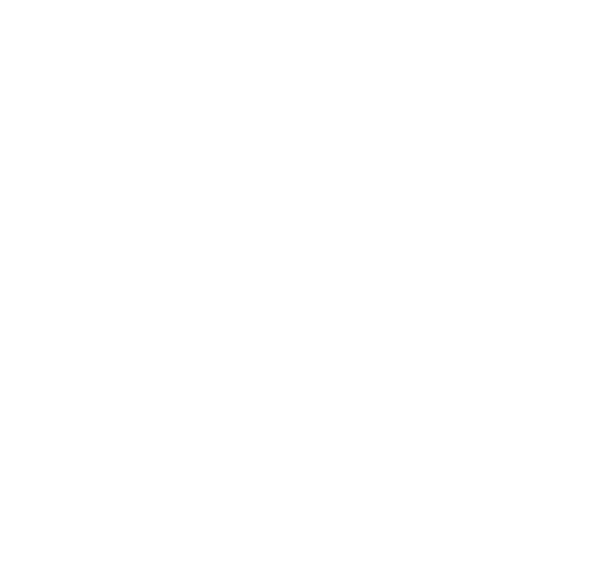

Thiết lập chatbot thông minh
Xây dựng hệ thống chatbot trên Website, Facebook, Telegram và các nền tảng phổ biến khác.


 Tự động hóa AI
Tự động hóa AI
Nghiên cứu và phát triển các giải pháp tự động hóa tích hợp trí tuệ nhân tạo (AI), giúp cắt giảm tối đa các tác vụ thủ công lặp đi lặp lại.
Kết nối các công cụ làm việc độc lập thành một luồng xử lý tự động, tối ưu hóa hiệu suất vận hành nội bộ.

 Chatbot đa nền tảng
Chatbot đa nền tảng
Xây dựng hệ thống chatbot trên Website, Facebook, Telegram và các nền tảng phổ biến khác.
Tự động tương tác, giải đáp thắc mắc và hỗ trợ khách hàng liên tục mà không cần xử lý thủ công.
Ghi nhận thông tin khách hàng tiềm năng nhanh hơn, giúp đội ngũ kinh doanh theo dõi và xử lý hiệu quả.

 Giải pháp
Website trọn gói
Giải pháp
Website trọn gói
Thiết kế, xây dựng và bảo trì hệ thống website chuyên nghiệp, được tinh chỉnh theo nhu cầu thực tế của từng doanh nghiệp. Tăng tốc độ đưa sản phẩm/dịch vụ lên môi trường trực tuyến, tối ưu UX/UI và đảm bảo khả năng mở rộng cao.
Khám phá thêm
 Dịch vụ mở rộng
Dịch vụ mở rộng
Xây dựng hệ thống email marketing bài bản, tự động hóa chăm sóc khách hàng.
Vận hành đa kênh trên các nền tảng mạng xã hội lớn hiện nay.
Cung cấp hạ tầng số giúp ứng dụng và cơ sở dữ liệu vận hành an toàn, mượt mà.

 Bộ giải pháp
Bộ giải pháp